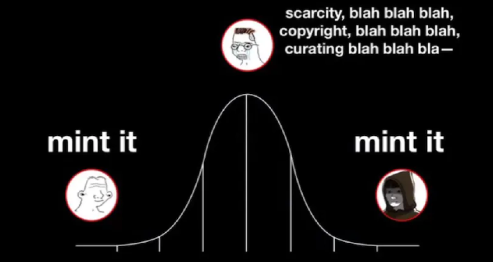

Just Mint It
By 2030 let’s assume that we were successful in onboarding most normies to blockchain culture. Everyone’s got their favorite non fungies & digital art is in a full swing renaissance.
XCOPY’s work is priced in the stratosphere. All the people from 2020-2022 are household names. Let’s do a thought experiment.
Minter A
Highly selective with their mints back then. Overly stressed about ‘scarcity’ & ‘curating’ a collector base. They minted around 50 total pieces in those years. The ‘grail years’.
Minter B
Highly experimental with their mints back then. Not too concerned with ‘scarcity’ or even upholding a ‘quality standard’ for their collectors. They minted around 300 total pieces in those years. The ‘grail years’.
There are a couple questions here
- Who is likely to have better S&D dynamics
- Who is likely to have a bigger collector base
- Who is likely to have their work meme’d
- Who is likely to be more relevant in history
Depending on what you are trying to accomplish you will choose A or B. I don’t really have a horse in your race so no need to get dogmatic.
This thought experiment is for the artists that want to mint more. The ones that want to tag the blockchain with their signature while it’s still naked, but maybe they’re insecure about it.
Artists are fickle. Many of them do what they are told in all areas of their life outside of creativity time. They mint when told. The collect when told. They get on their soap box when told. It’s human nature to a certain degree and I don’t fault them for it. I do take up arms when they start controlling the narrative however.
If you want to mint it… mint it. If it doesn’t sell now maybe it will tomorrow, or next year, or 2030, or never - does it really matter?
My prediction is by 2030 the years 2020-2022 will be revered in the manner 2017-2018 are right now. The work of artists that stuck around and kept building will be considered ‘grails’. And I genuinely believe the artists that only minted a handful of work, but still are around, will look somewhat silly for not maximizing the opportunity to put art in the rafters of blockchain history.
Just my opinion though.